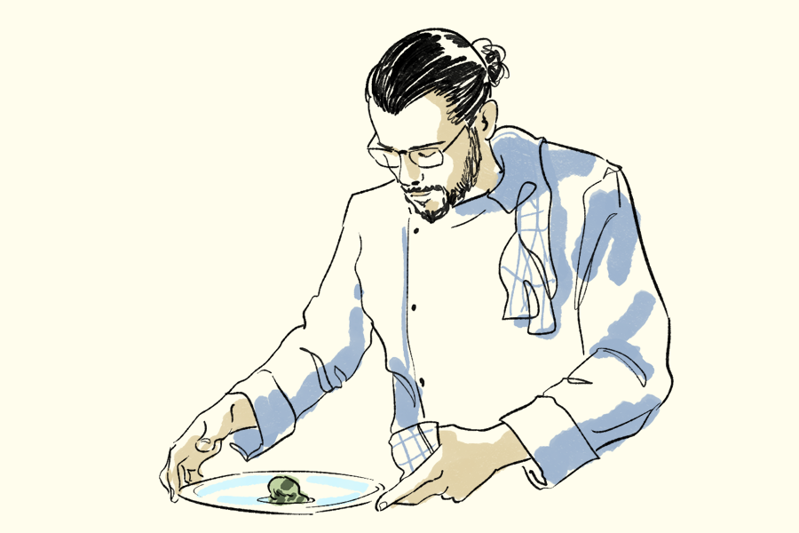

L'Oustau de Baumanière, trois étoiles Michelin depuis 2020, est
dirigé par le chef Glenn Viel. Chef de brigade dans l'émission
Top Chef depuis plusieurs saisons, il remporte cette année la
victoire aux côtés du jeune candidat Quentin Mauro.
À l'Oustau, le
chef Viel met à l'honneur les produits locaux, rehausse ses plats de «
cailloux d'assaisonnement » — poudres concentrées d'olive ou de feuille de
vigne — et baratte chaque matin son propre beurre, clin d'œil à ses
racines normandes. Sa démarche de terroir, durable et authentique, est
récompensée par le label Gastronomie Durable. À ses côtés, le pâtissier
Brandon Dehan signe des desserts généreux, tandis que l'art du détail se
prolonge dans la vaisselle, avec les céramiques de Cécile Cayrol et le
verre soufflé d'Alban Gaillard. Une cave forte de 3 000 références
parachève cette expérience d'exception au cœur des Alpilles
Pour en savoir plus : baumaniere.com